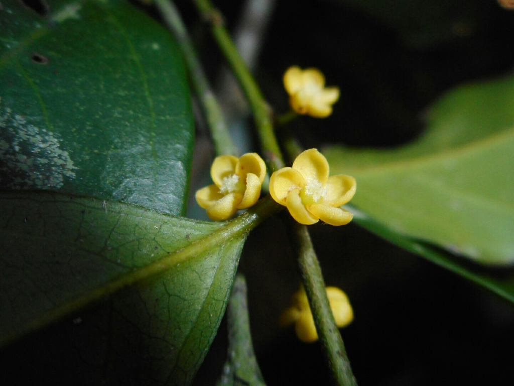

Pandaceae
(No common name widely used)
Pandaceae is a small family of flowering plants in the order Malpighiales, consisting of 3 genera and about 15 species of evergreen trees and shrubs. The family has a disjunct distribution, found in tropical West and Central Africa and separately in Southeast Asia (Malesia). Members are typically dioecious (having separate male and female plants).
Overview
Pandaceae comprises woody plants inhabiting tropical rainforests. The family includes the genera Panda (monotypic, Africa), Microdesmis (Africa and Asia), and Galearia (Asia). Historically, these genera were often placed within the large family Euphorbiaceae due to similarities in their unisexual flowers and fruit types, but molecular data clearly supports their recognition as a distinct family within the large and diverse order Malpighiales.
Plants in this family are characterized by their simple, alternate leaves with stipules, and their unisexual flowers borne on separate male and female individuals (dioecy). The flowers are generally small and inconspicuous. Fruits are drupes (fleshy with a hard stone), which can be quite large and hard in the case of Panda oleosa.
Economically, the family is of minor importance. The seeds of Panda oleosa are edible and yield oil, but are difficult to extract due to the hard fruit wall. Some species may have local uses for timber or traditional medicine.
Quick Facts
- Scientific Name: Pandaceae Engl. & Gilg
- Common Name: None widely used
- Number of Genera: 3 (Panda, Microdesmis, Galearia)
- Number of Species: Approximately 15
- Distribution: Tropical West & Central Africa; Southeast Asia (Malesia).
- Evolutionary Group: Eudicots - Rosids - Fabids - Malpighiales
Key Characteristics
Growth Form and Habit
Evergreen trees or shrubs.
Leaves
Leaves are simple, arranged alternately along the stem. Margins are entire or sometimes toothed (serrate/dentate). Stipules are present, though often small and caducous (falling off early).
Inflorescence
Flowers are borne in axillary positions, arranged in clusters (fascicles), racemes, or panicles. Inflorescences are often relatively small.
Flowers
Flowers are small, unisexual (plants are typically dioecious), and actinomorphic (radially symmetrical). They are typically 4- or 5-merous.
- Calyx: Consists of 4 or 5 sepals, which are small, free or connate at the base, and persistent.
- Corolla: Consists of 4 or 5 petals, which are free and often small. Petals are sometimes absent (e.g., in Galearia).
- Androecium (Male Flowers): Consists of 5, 10, or 15 stamens. Filaments can be free or connate at the base. A rudimentary ovary (pistillode) is often present.
- Gynoecium (Female Flowers): The ovary is superior, composed of 2-5 fused carpels forming 2-5 locules. Each locule contains a single pendulous ovule attached near the top (apical-axile placentation). Styles are usually short or absent; stigmas are distinct, often lobed or capitate. Staminodes (sterile stamens) may be present.
Fruits and Seeds
The fruit is a drupe (a fleshy fruit containing one or more hard 'stones' enclosing the seeds). The drupe can be large with a very hard, thick wall (Panda) or smaller and less woody (Microdesmis, Galearia). It contains 1-5 seeds. Seeds possess endosperm.
Chemical Characteristics
Information is limited, but unusual fatty acids, such as gorlic acid (a cyclopentenyl fatty acid), have been reported in the seed oil of Panda oleosa.
Field Identification
Identifying Pandaceae requires attention to vegetative features, reproductive condition (dioecy), and geographic location, as flowers are often small:
Primary Identification Features
- Habit: Evergreen tree or shrub in tropical Africa or SE Asia.
- Leaves: Alternate, simple, stipulate (look for stipules or scars).
- Reproductive System: Plants are dioecious (separate male and female individuals). Flowers are small and unisexual.
- Flowers: 4- or 5-merous calyx; petals 4-5 or absent; stamens 5, 10, or 15 (male fls); superior ovary with 2-5 locules (female fls).
- Fruit: Drupe (fleshy with hard stone(s)).
Secondary Identification Features
- Inflorescence Position: Typically axillary clusters or short racemes/panicles.
- Petals: Note presence (Panda, Microdesmis) or absence (Galearia).
- Habitat: Tropical rainforests.
Seasonal Identification Tips
- Flowering/Fruiting Period: Essential for confirmation, but flowers can be inconspicuous. Fruits, especially the large drupes of Panda, might be more easily found on the forest floor. Check local phenology.
- Vegetative State: Combination of alternate, simple, stipulate leaves on a tree/shrub in the correct geographic region can suggest the family, but requires floral/fruit confirmation.
Common Confusion Points
- Euphorbiaceae (s.l.) / Phyllanthaceae / Picrodendraceae: Many families formerly included in or related to Euphorbiaceae share features like simple alternate stipulate leaves, unisexual flowers, and drupaceous or capsular fruits. Distinguishing Pandaceae requires careful examination of ovary structure (locule/ovule number, placentation), stamen number/arrangement, and petal presence/absence. Many Euphorbiaceae relatives have 3 carpels/locules.
- Other tropical tree/shrub families: Requires detailed checking of floral formula, ovary position, placentation, and fruit type using regional floras.
Field Guide Quick Reference (Trop. Africa/Asia)
Look For:
- Tree or shrub
- Leaves: Alternate, simple, stipulate
- Plants: Dioecious (separate sexes)
- Flowers: Small, unisexual, 4-5 parts
- Petals: 4-5 or absent
- Ovary: Superior, 2-5 locules
- Fruit: Drupe
Key Distinctions:
- Dioecious habit
- Combination of simple, stipulate leaves and drupe fruit
- Specific flower structure (petal presence/absence, stamen number)
- Geographic range (Africa or SE Asia)
- Often distinct from Euphorbiaceae relatives by having 2 or 4-5 carpels (vs. often 3)
Notable Examples (The Three Genera)
The family comprises three distinct genera:

Panda oleosa
(Panda Tree)
The only species in its genus, found in West and Central Africa. It is a large forest tree known for its very large, heavy, extremely hard-shelled drupe containing edible seeds rich in oil. Flowers have 5 sepals, 5 petals, and 10 stamens (male) or a 3-4 loculed ovary (female).

Microdesmis
(e.g., M. puberula)
This genus includes about 10 species of shrubs or small trees found in both tropical Africa and Southeast Asia. Flowers typically have 5 sepals, 5 petals, and 5 or 10 stamens (male) or a 2-3 loculed ovary (female). Fruits are smaller drupes, often brightly colored (red or orange).

Galearia
(e.g., G. fulva)
This genus comprises about 4 species of trees and shrubs found in Southeast Asia (Malesia). A key distinguishing feature is the absence of petals in both male and female flowers. Male flowers typically have 4-5 sepals and 10 or 15 stamens. Female flowers have a 3-5 loculed ovary. Fruits are drupes.
Phylogeny and Classification
Pandaceae belongs to the large and highly diverse order Malpighiales, situated within the fabid clade of rosid eudicots. This order contains roughly 40 families, including well-known groups like Euphorbiaceae, Salicaceae (willows), Violaceae (violets), and Passifloraceae (passion flowers).
Historically, the genera of Pandaceae were often included within Euphorbiaceae (sensu lato) based on morphological similarities like unisexual flowers and capsular or drupaceous fruits. However, molecular phylogenetic studies have consistently shown that Pandaceae forms a distinct lineage separate from Euphorbiaceae (sensu stricto) and its closer relatives like Phyllanthaceae and Picrodendraceae. Within Malpighiales, Pandaceae appears to be part of a clade that includes families like Irvingiaceae, Putranjivaceae, Lophopyxidaceae, and potentially Chrysobalanaceae, although exact relationships are still being refined.
Position in Plant Phylogeny (APG IV)
- Kingdom: Plantae
- Clade: Angiosperms (Flowering plants)
- Clade: Eudicots
- Clade: Rosids
- Clade: Fabids
- Order: Malpighiales
- Family: Pandaceae
Evolutionary Significance
Pandaceae is significant for understanding the diversification within Malpighiales:
- Biogeography: Its Africa-Asia disjunct distribution suggests an older origin and raises questions about past connections or long-distance dispersal.
- Phylogenetic Placement: Helps resolve relationships within the massive Malpighiales order and clarifies the boundaries of Euphorbiaceae s.l.
- Morphological Diversity: Shows variation in petal presence/absence and stamen number within a small family.
- Fruit Evolution: The large, hard drupe of Panda represents a specialized fruit type possibly adapted for specific dispersers (e.g., large mammals like elephants).